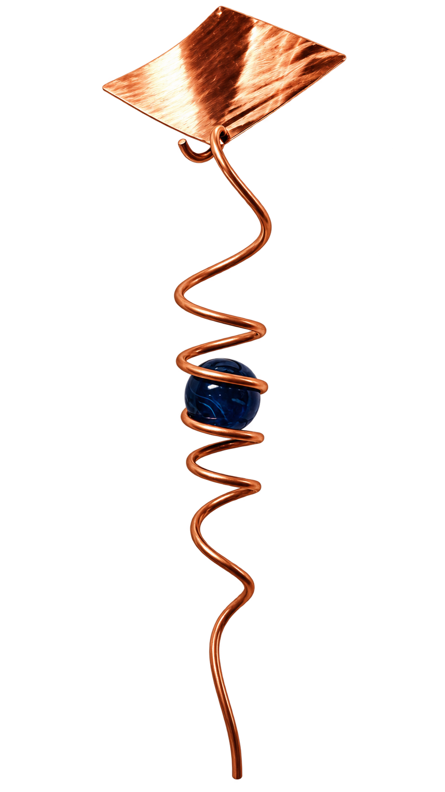
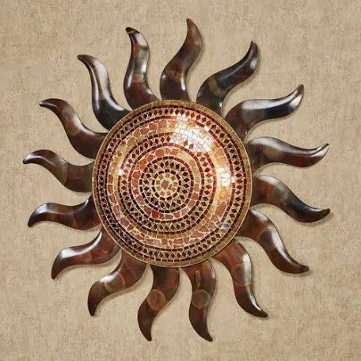
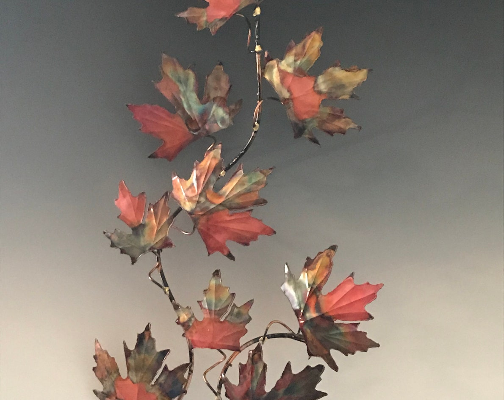

Copper in Motion
Hammered copper becomes sculpture through hand forming, balance and movement.
Hand formed, shaped and finished one piece at a time, these playful copper creations transform an ancient metalworking tradition into objects filled with imagination, movement and personality.

Hammered copper becomes sculpture through hand forming, balance and movement.

Each piece carries the subtle marks and character of the craftsman's hand.

Traditional coppersmithing meets a distinctly playful imagination.
Our missing creation has a place waiting for it. The original image can be added here without rebuilding the page.
The appeal of handcrafted work lies in the evidence of its making. Copper is cut, hammered, curved, joined and finished by hand. No two pieces need be precisely alike — and that individuality is part of the art.
Shooting Star celebrates the imagination of the working artisan: traditional metalworking skills used not simply to make an object, but to give that object character.
This demonstration website shows how an individual artisan's work can be presented online while allowing the craftsmanship itself to remain the center of the experience.